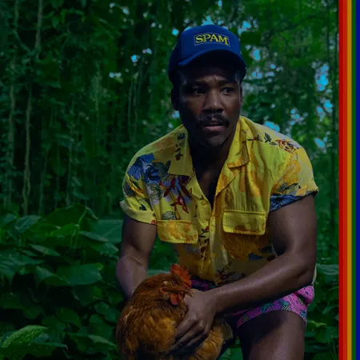

Music

Good Kid, M.A.A.D City Album
Kendrick Lamar |
|---|
| I've been a good fan of Kendrick Lamar for a while. kendrick has meaning behind most of his songs and I like meaning in songs. His music career rose up with his second album "Good Kid, M.A.A.D City" He has really good features in songs and he has a good voice. Learn More |

Pic taken of him live and some of his albums
J.Cole |
|---|
| J. Cole has had a choke hold on me since I first really got into music. His songs also have meaning behind them and my favorite album of his is "2014 Forest Hills Drive" My two Favorite songs from it are "Love Yourz" and "Wet Dreamz" I even saw him live at the "It's All A Blur" Tour. Learn More |

The kid Laroi's "The First Time" Album
The Kid Laroi |
|---|
| I have just recently became a fan of The Kid Laroi almost a year ago. He has so many good songs and good albums. He was mostly known for his colabs with Juice Wrld. I love his new song "Hatred" from his new album "The first Time (Deluxe Version)" I am going to see him September 6th in concert. Learn More |

Some of Drake's albums
Drake |
|---|
| I am a good fan of Drake but definitely not his biggest fan. He has good songs and pretty good albums. I went to see him live at the "It's All A Blur" tour but I mostly went to see J.cole. My favorite songs from Drake are "Little bit" and "Too good" Learn More |

Childish Gambino's "Bando Stone and The New World" album
Childish Gambino |
|---|
| Childish Gambino (Donald Glover) is an actor, comedian, and musician. I have been a fan of him since my brother showed me his music a couple of years ago. The song "Lithonia" from his new album "Bando Stone and The New World" has the biggest hold on my neck. It is such a good song and he had so many more in his new album. Learn More |
back to the Top